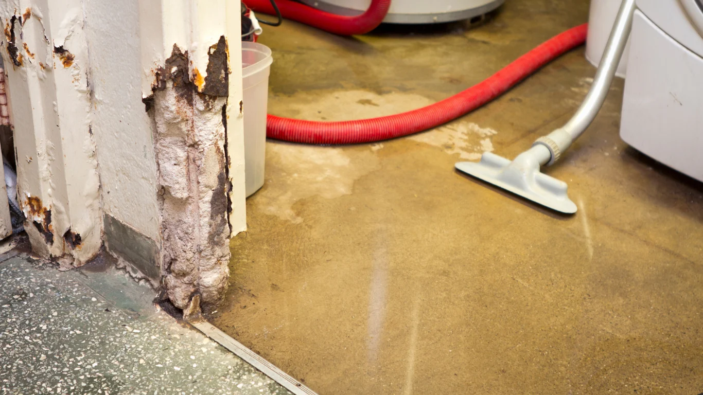
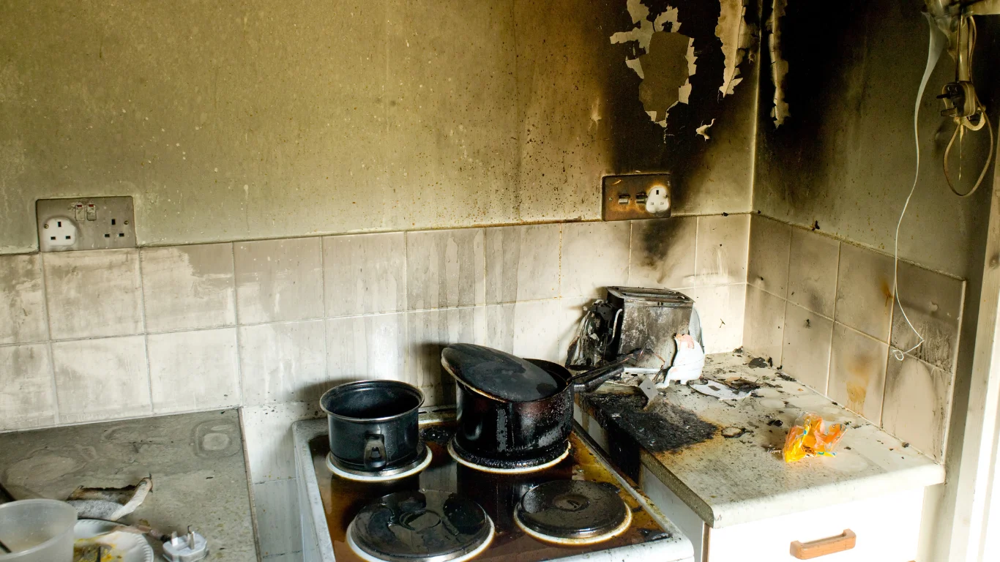
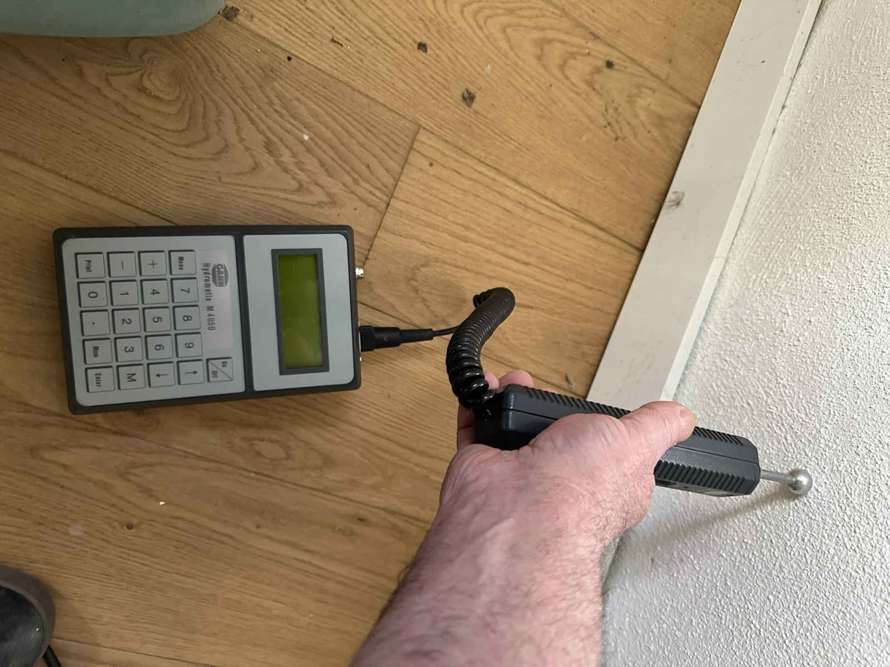
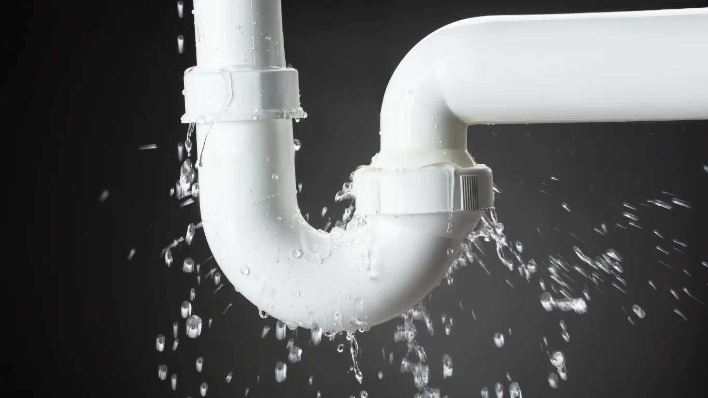
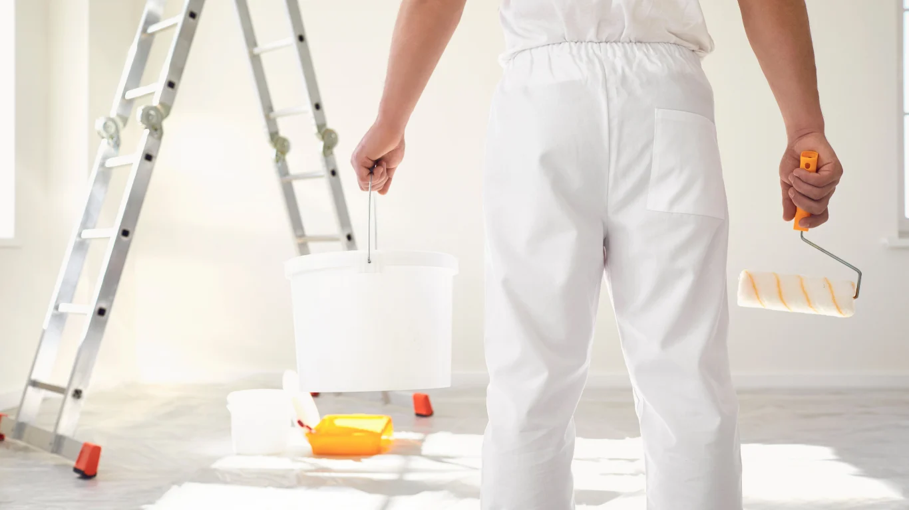

Unsere Leistungen
Den Schaden verstehen.
Die Sanierung durchdenken.
Von der Ursachenklärung bis zur Wiederherstellung: Hier finden Sie die Leistungen für die einzelnen Schritte Ihrer Sanierung.

Ein Rohrbruch oder eindringendes Wasser kann Böden, Wände und Inventar beschädigen. Wir nehmen den Schaden auf und stimmen die erforderlichen Maßnahmen mit Ihnen ab.
Leistung kennenlernen
Ruß, Rauch und Löschwasser hinterlassen unterschiedliche Schäden. Wir erfassen die betroffenen Bereiche und planen die Sanierung von Gebäude und Inventar.
Leistung kennenlernen
Feuchtigkeit ist nicht immer an der Oberfläche sichtbar. Messungen helfen, das Ausmaß zu beurteilen und die Trocknung auf die betroffene Bausubstanz abzustimmen.
Leistung kennenlernen
Verdeckte Leckagen lassen sich häufig nicht auf den ersten Blick erkennen. Mit Ortungstechnik grenzen wir die Schadenursache ein.
Leistung kennenlernenNach Brand- oder Wasserschäden können Gerüche zurückbleiben. Wir beurteilen die Situation und stimmen geeignete Maßnahmen zur Geruchsneutralisation ab.
Leistung kennenlernen
Wenn die Schadenursache behoben und die Trocknung abgeschlossen ist, folgt die Wiederherstellung der betroffenen Bereiche.
Leistung kennenlernenDer nächste Schritt